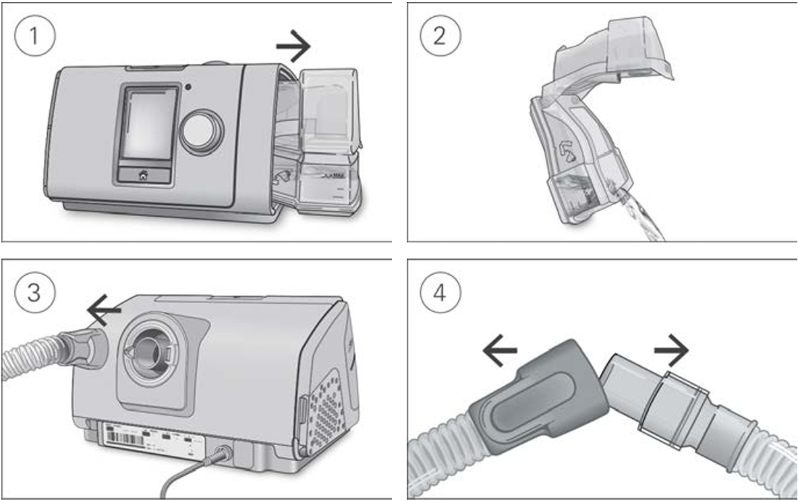
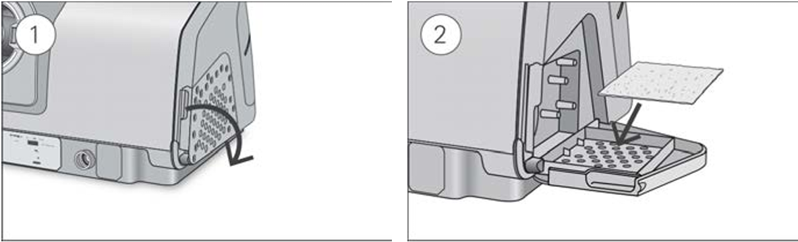

It is important that you regularly clean your AirSense 10 device to make sure you receive optimal therapy. The following sections will help you with disassembling, cleaning, checking, and reassembling your device.
Regularly clean your tubing assembly, humidifier, and mask to receive optimal therapy and to prevent the growth of germs that can adversely affect your health.

You should clean the device weekly as described. Refer to the mask user guide for detailed instructions on cleaning your mask.
You should regularly check the humidifier, air tubing, and the air filter for any damage.

When the humidifier and air tubing are dry, you can reassemble the parts.